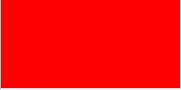
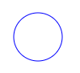
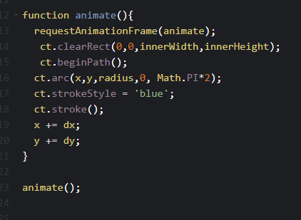

The HTML CANVAS element is used to draw graphics, on the fly, via scripting.
HTML Canvas Can Draw Text
HTML Canvas Can Draw Graphics
HTML Canvas Can be Animated
HTML Canvas Can be Interactive
HTML Canvas Can be Used in Games
var canvas = document.getElementById("Canvas");
var ct = canvas.getContext("2d");
ct.fillStyle = "red"
fillRect(x,y,width,height)
line(x0, y0, x1, y1)
rect(x, y, width, height, {roundness: 0.0})
triangle(x1, y1, x2, y2, x3, y3)
ellipse(x, y, width, height)
arrow(x, y, width)
star(x, y, points=20, outer=100, inner=50)
ct.moveTo(x, y);
ct.lineTo(x1, y1);
ct.stroke();
ct.beginPath();
ct.arc(x, y, radius, startangle, endangle);
ct.stroke();
createLinearGradient(x,y,x1,y1)
createRadialGradient(x,y,r,x1,y1,r1)
addColorStop()
- ct.beginPath();
- ct.arc(x,y,radius,0, Math.PI*2);
- ct.strokeStyle = 'blue';
- ct.stroke();

ct.clearRect(x,y,width,height);
Clearing the canvas between frames gives us our complete animation.
